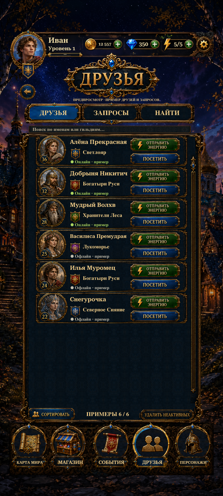

World Map metal frames restored to their full 236px reference height. Separate transparent symbol adaptations preserve the complete scroll and helmet; a neutral navy inset removes the copied Map selection arc. Only Friends uses the blue active frame. Rows scale uniformly to 94% to clear the larger footer. Captions and five routes remain live.
Actual Unity Play Mode captures with isolated saves and simulated phone sizes/safe areas. Choose Before R7 to compare. This is a capture viewer, not an interactive build.

Transparent symbols · Imagegen prompts · Changes and validation · Verification results